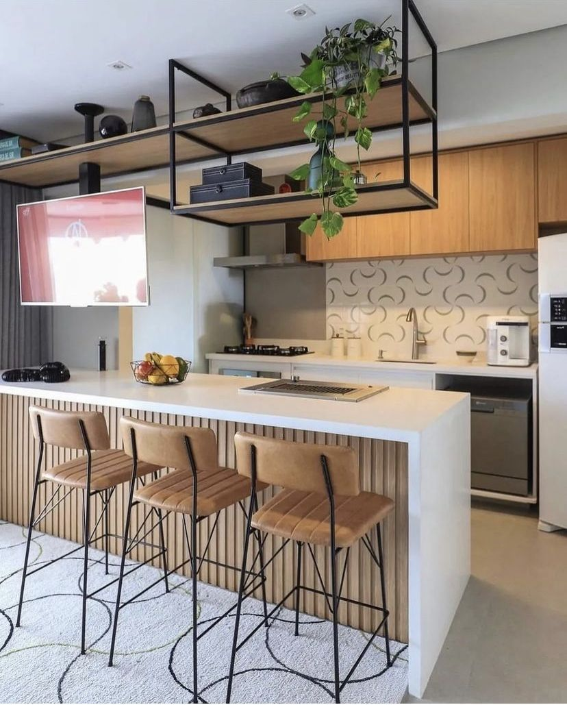

Decoração de cozinha: guia prático para valorizar sua cozinha
Falar em decoração de interiores é saber que o visual de nossos cômodos é o encarregado de criar a atmosfera de nossa casa, além de ser uma forma de demonstrarmos nossa personalidade. Por isso que a decoração de interiores é um fator tão importante na hora de detalhar um ambiente, fazendo com que ele proporcione bem-estar e harmonia às pessoas que estão ali acomodadas. Além disso, a decoração de interiores é uma maneira de planejar um espaço que seja, ao mesmo tempo, bonito e funcional, levando praticidade e equilíbrio ao nosso dia a dia.
